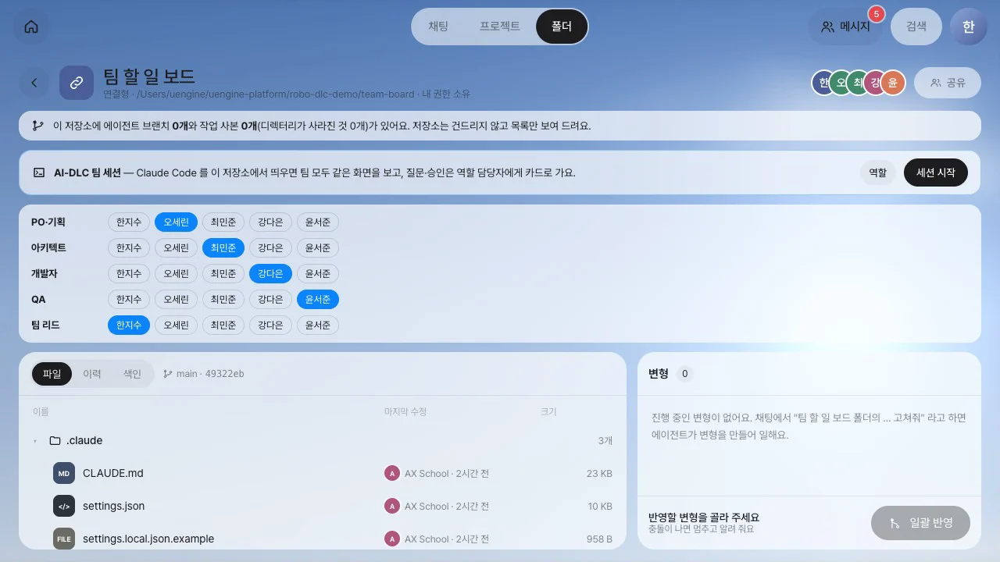
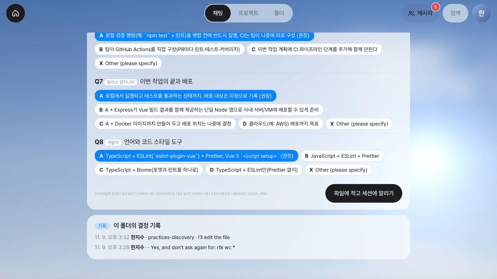
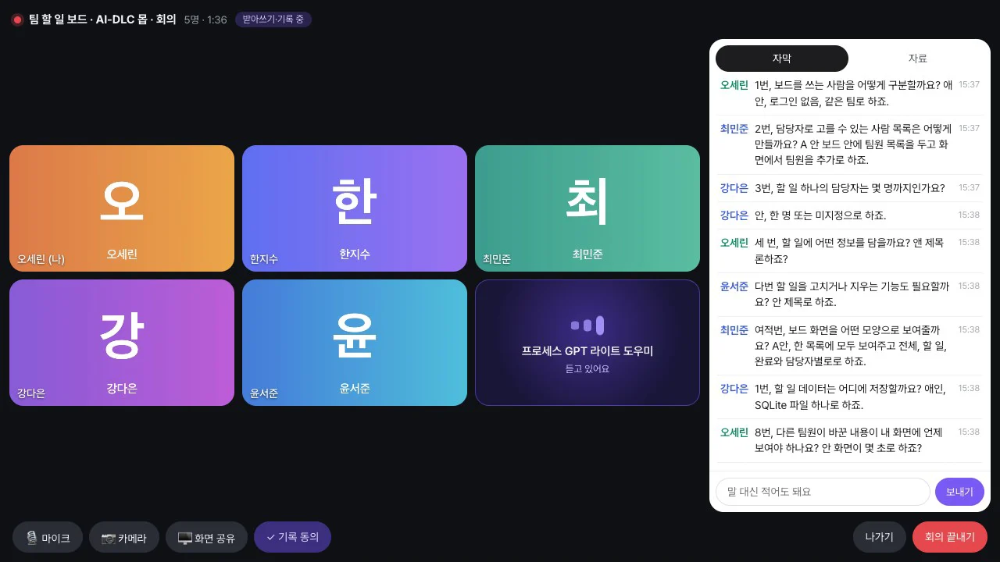
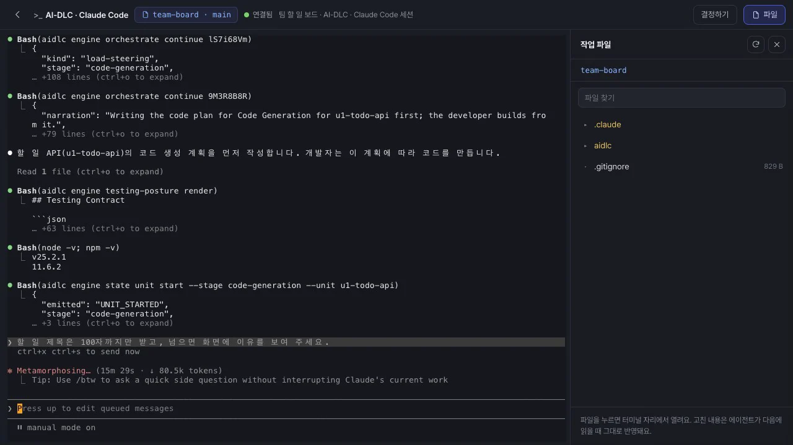

실습 레벨 2에서는 한 사람이 터미널 앞에서 모든 질문에 답하고 모든 단계를 승인했습니다. 팀으로 진행하려면 질문과 승인 요청이 담당자에게 전달되어야 합니다. 모두가 같은 화면을 볼 수 있어야 하고, 누가 무엇을 결정했는지도 기록으로 남아야 합니다. 이 장에서는 Process GPT Lite의 AI-DLC 팀 세션으로 레벨 2와 같은 순서를 다섯 사람이 나눠 맡는 방법을 살펴봅니다.
왜 도구가 필요한가#
AI-DLC는 Claude Code 터미널 하나에서 실행됩니다. 질문 파일과 승인 창은 그 터미널 앞에 앉은 사람에게만 보이고, 진행 기록은 저장소의 aidlc/ 폴더에 마크다운으로 쌓입니다. 혼자 하는 실습에서는 이것으로 충분했습니다. 하지만 이론에서 다룬 팀 운영 방식을 실제로 적용하려면 이 터미널을 팀이 함께 쓰는 공간으로 바꾸어야 합니다.
| 이론에서 다룬 것 | 터미널 하나로는 | 팀 세션에서 |
|---|---|---|
| 몹 정교화·몹 구축(1장) | 질문과 설계 제안을 한 사람만 봅니다 | 폴더 구성원 모두가 작업실에서 서버에서 실행한 Claude Code 하나의 화면을 함께 봅니다 |
| 지정 승인자(4장) | 승인 창 앞에 있는 사람이 승인자가 됩니다 | 단계마다 역할(PO·아키텍트·개발자·QA·팀 리드)을 정하면, AI-DLC가 답을 기다릴 때 그 역할을 맡은 사람의 홈에 카드가 전달됩니다 |
| 의사결정 로그(4장) | 감사 기록에 「사람의 답」만 남고 누가 답했는지는 남지 않습니다 | 결정 화면에서 고른 답이 세션의 선택 창에 그대로 입력되고, 폴더의 결정 기록에 누가 언제 무엇을 골랐는지 남습니다 |
| 볼트 관제(3장) | 상태 파일과 감사 기록을 직접 읽습니다 | 홈 대시보드와 볼트 보드가 감사 기록을 읽어 단계·유닛·볼트별 진척과 사람 대기 시간을 보여 줍니다(21장) |
팀 세션에서 하는 일#
| 하는 일 | 화면 |
|---|---|
| 역할 정하기 | 폴더의 AI-DLC 팀 세션 띠 → 역할. 폴더 구성원에게 역할을 맡깁니다 |
| 세션 띄우기 | 세션 시작. 이 저장소에서 Claude Code가 실행되고 작업실이 열립니다. /aidlc classic "…"도 여기서 입력합니다 |
| 맡은 사람에게 넘기기 | 답변 방식 선택, 질문 파일 작성, 요약 확인, 단계 승인, 코딩 중 도구 권한 허용을 기다릴 때는 해당 단계 담당자의 홈에 카드가 전달됩니다 |
| 정하기 | 카드의 결정하기 → 결정 화면. 세션의 선택 창과 같은 선택지가 나오고, 고른 번호가 그대로 입력됩니다 |
| 함께 정하기 | 질문의 답은 검토 보드에서 모두가 함께 고릅니다(20장). 의견이 갈리면 몹 회의(대화방 화상 회의 → 회의록 → 합의한 답)로 정합니다 |
| 끼어들기 | 세션 보기. 코드가 만들어지는 중에도 쉘을 열어 진행 상황을 보고, 바꿀 점을 직접 입력합니다 |
레벨 2의 장마다 누가 정하나#
레벨 2와 같은 classic 실행을 다섯 사람이 나눠 맡으면 다음과 같습니다.
| 레벨 2 장 | AI-DLC 단계 | 정하는 사람과 방법 |
|---|---|---|
| 9장 팀 규칙 | 팀 규칙 | 팀 리드 — 결정 화면에서 답하고 승인합니다 |
| 10장 요구사항 | 요구사항 | PO가 정하고, 질문의 답은 팀이 검토 보드에서 함께 고릅니다. 의견이 갈리면 몹 회의를 엽니다 |
| 11장 유저 스토리와 화면 | 유저 스토리, 화면 | PO — 검토 에이전트의 지적은 팀이 함께 봅니다 |
| 12장 도메인 설계 | 도메인 설계 | 아키텍트 — 수정을 요청한 뒤 다시 승인합니다 |
| 13장 유닛과 API 계약 | 유닛, API 계약 | 아키텍트 |
| 14장 볼트 계획 | 볼트 계획 | 팀 리드 — 몹 구축 회의 뒤 승인합니다 |
| 15~17장 구현 | 유닛별 설계·코드 생성 | 코드 계획과 도구 권한은 개발자가, 유닛 설계 승인은 아키텍트가 맡습니다. 개발자는 세션 보기로 코딩 중에 끼어듭니다 |
| 18장 빌드·테스트 | 빌드·테스트 | QA — 판정표를 보고 승인하거나 되돌립니다 |
담당자가 없는 역할(예: 디자인)의 단계는 폴더 소유자에게 넘어갑니다. 결정은 그 역할을 맡은 사람이나 폴더 편집 권한을 가진 사람이 할 수 있습니다.
실제 실행 영상#
아래 두 영상은 classic을 실제로 한 번 실행하면서 녹화한 것입니다. 첫 영상은 요구사항 몹 회의와 수정 요청(몹 정교화)이고, 둘째 영상은 볼트 계획 회의와 코딩 중 개입(몹 구축)입니다. 둘째 영상에서 개발자가 쉘에 입력한 「할 일 제목은 100자까지만」이라는 지시는 기능 설계 규칙, 코드 계획, 생성된 앱의 E2E 시험, 마지막 요약까지 이어집니다.




직접 따라 하기#
Process GPT Lite 튜토리얼 30장 AI-DLC 팀 세션에 저장소 연결부터 역할 정하기, 몹 회의, 빌드·테스트 승인, 홈 대시보드까지 단계별 실습 안내가 있습니다. 실습 저장소는 이 핸즈온의 레벨 2와 같은 AI-DLC 2.11.2 classic 스코프를 사용합니다.
알아 둘 점#
- 팀 세션은 서버 컴퓨터에 로그인된 Claude Code 하나로 실행됩니다. 여러 사람이 한 세션을 함께 쓸 때는 그 계정의 이용 조건을 지켜야 합니다.
- 세션 상태는 8초 간격으로 확인합니다. 카드도 그만큼 늦게 도착할 수 있습니다. Claude Code 선택 창의 문구가 바뀌어 Lite가 읽지 못하면 카드가 전달되지 않습니다. 이때는 작업실에서 직접 답합니다.
- 결정 화면이 열려 있는 동안 세션의 선택 창이 바뀌면 결정을 거절하고 화면을 다시 읽습니다. 이전 선택지가 세션에 입력되는 일을 막기 위해서입니다.
확인 문제#
요구사항 단계의 승인 창이 세션에 떴습니다. 홈에 카드를 받는 사람은 누구인가요?
역할표에서 PO·기획 역할을 맡은 사람입니다. 그 역할을 맡은 사람이 없으면 폴더 소유자에게 카드가 전달됩니다.
혼자 한 레벨 2 실습의 감사 기록과 팀 세션의 결정 기록은 무엇이 다른가요?
AI-DLC 감사 기록에는 사람의 답이 무엇이었는지만 남습니다. 팀 세션의 결정 기록에는 같은 답과 함께 누가 어느 단계에서 언제 그 답을 골랐는지도 남습니다. 이 기록은 4장에서 다룬 의사결정 로그 역할을 합니다.